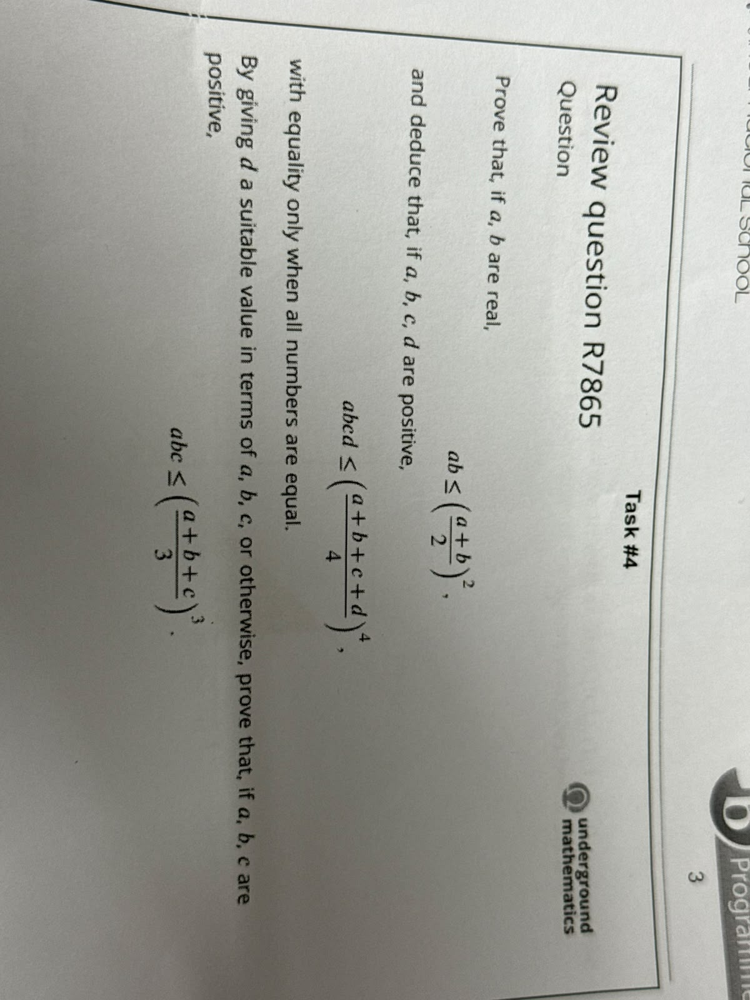
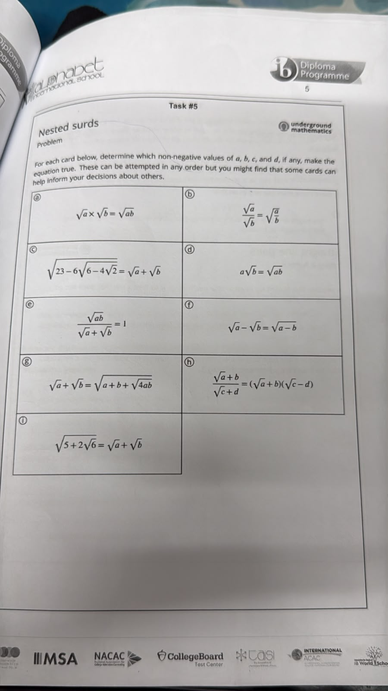
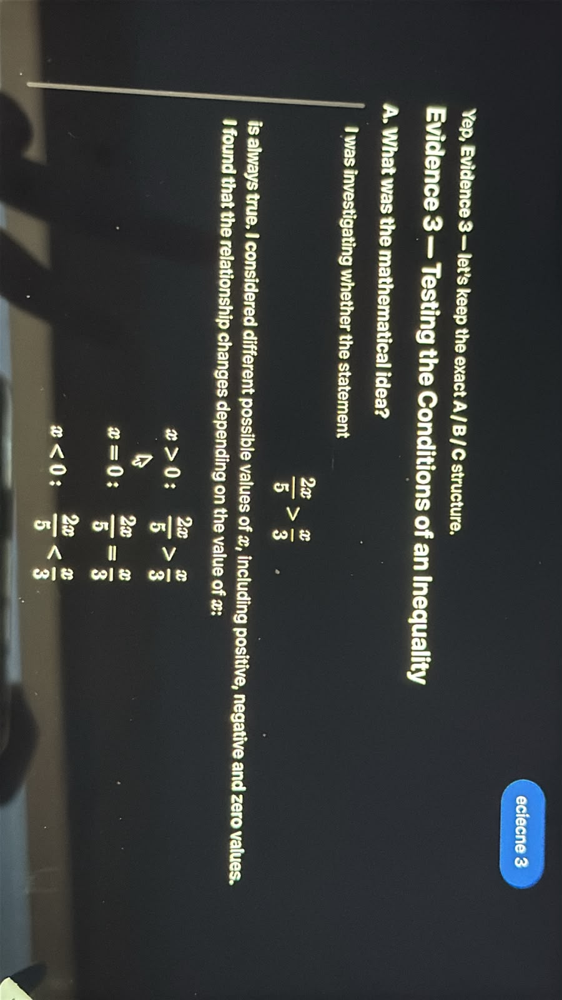

From “seems true”
to “is true”
A mathematical idea becomes knowledge when it survives
its own questions.
When does a mathematical idea
become mathematical knowledge?
A difference
of two fractions

WHAT IT REVEALED Repeated examples made a pattern convincing enough to conjecture. But examples show only the cases tested; they do not establish every possible case.
Nested
surds

WHAT IT REVEALED A familiar-looking rule cannot be trusted without asking where it works, when it fails, and what conditions it requires.
Testing the conditions
of an inequality

WHAT IT REVEALED Truth can be conditional. Multiplying by 15 gives 6x > 5x, so x > 0; at x = 0, 0 > 0 is false. Conditions define scope.
Graphical
representation

WHAT IT REVEALED A graph provides visual evidence; algebra provides analytical justification. An accurate-looking intersection can still lack exact precision.
Discovery is not
the enemy of proof.
Examples, patterns and graphs are not merely weaker versions of proof. They are essential for discovering mathematical relationships and forming conjectures. A mathematician often needs evidence before knowing what should be proved.
A mathematical idea becomes mathematical knowledge when its validity has been justified within clearly defined conditions.
Examples can reveal a pattern. Patterns can create conjectures. Testing can challenge those conjectures. Conditions define where a claim applies. Proof or rigorous reasoning explains why the claim is valid.